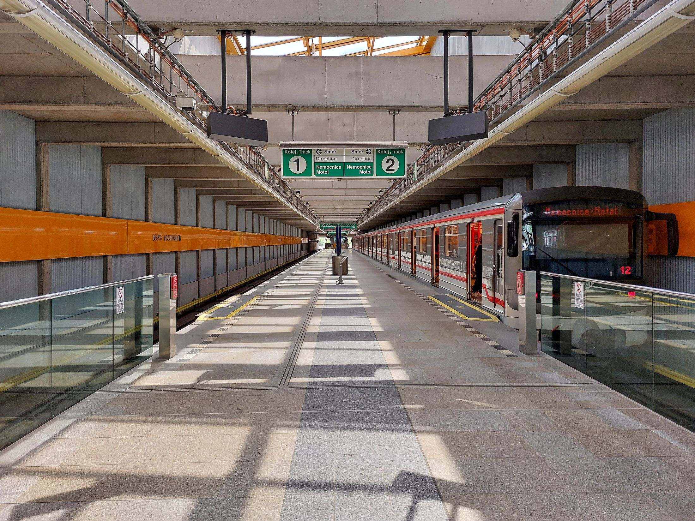
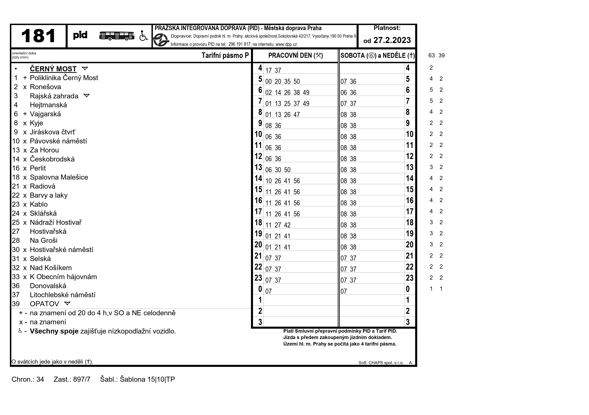
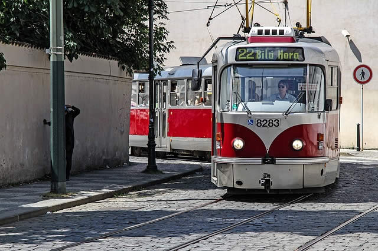
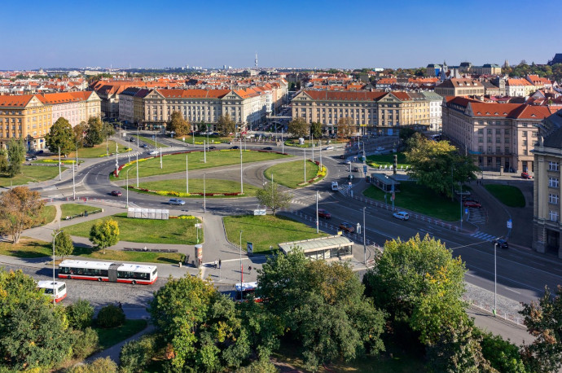
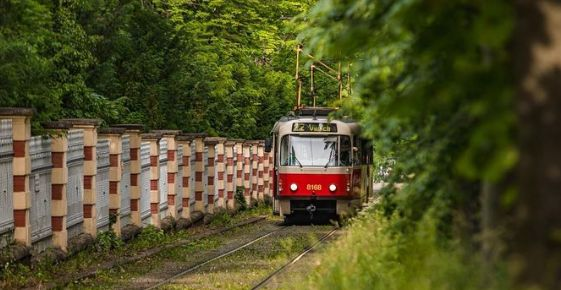
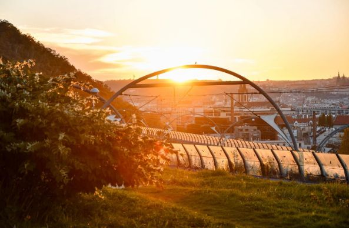
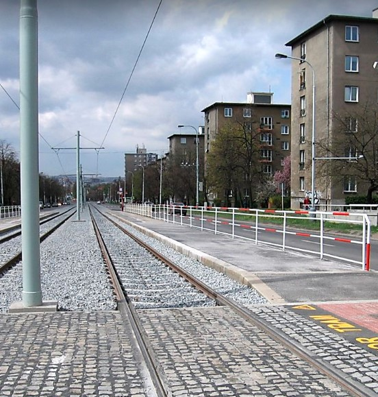
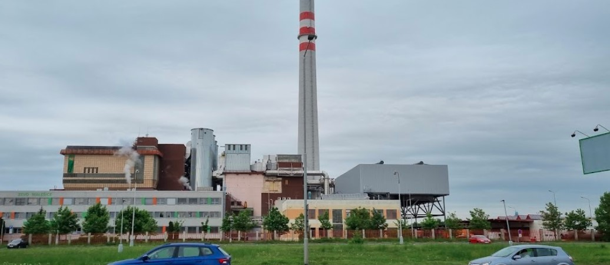
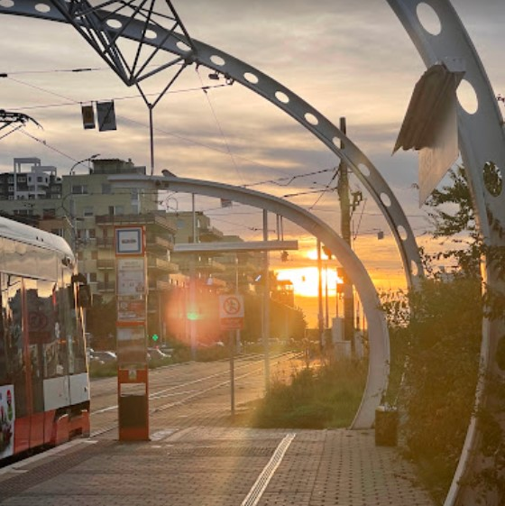
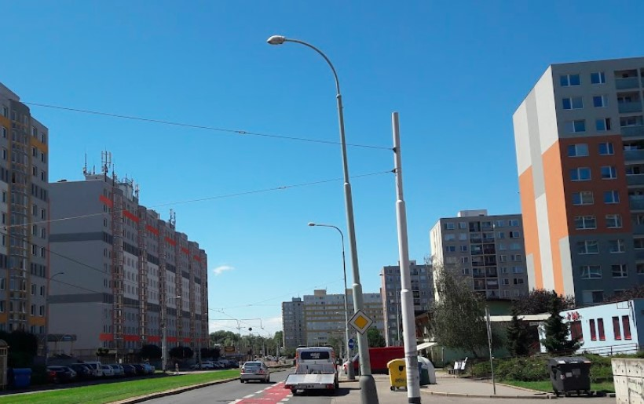

stanice metra:
Depo Hostivař
linka autobusu:
Linka 181
linka tramvaje:
Linka 22
Stanice metra Rajská zahrada
originální koncept dvoupatrové stanice metra, linka B
Projížďka na stanici Nádraží Podbaba
trasa Vítězné náměstí - Nádraží Podbaba, tramvajemi 8/18
Tramvajová trať směrem na Pražský Hrad
trasa Chotkovy Sady - Malovanka, tramvajemi 22/23
Most spojující Žižkov a Palmovku
trasa Krejcárek - Palmovka, nyní výluka do června
Sídliště Hloubětín a okolí
tramvajová trať linek 14/25
Spalovna Malešice
nic tam není, ale hezký to je, bus 181/183
Sídliště Barrandov a okolí
obrovské sídliště, tramvajové linky 5/12/20
Sídliště Řepy
ještě větší sídliště, tramvajové linky 9/10/16